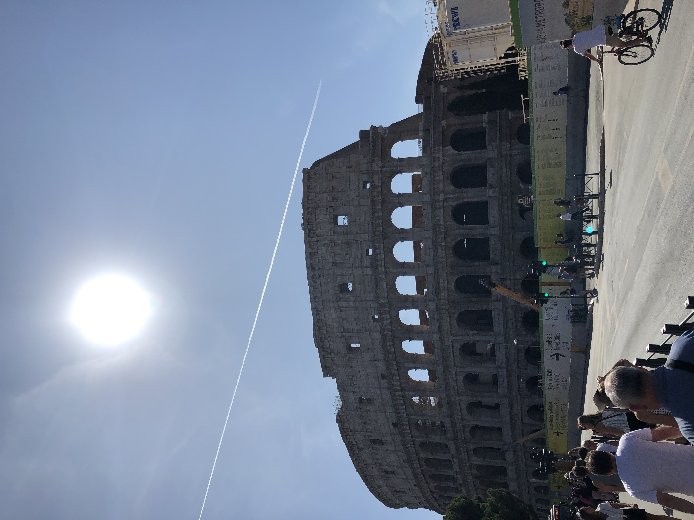

Rome is where we ended our vacation, and we had to pack a lot into these last few days. We saw a lot but not nearly everything there is to see in Rome. It was by far the largest city I've ever been to in my life. It would take multiple trips to be able to see and do everything the city has to offer. We went to a lot of the main attractions like the Coleseum, Trevi Fountain, and Spanish Steps. We also went into the world's smallest country, the Vatican City. The art within the Vatican was the most beautiful that I have ever seen. I would have loved to see the Pope on the day of the week that he shows himself to whatever audiences amasses.
The Trevi Fountain was surrounded by a horde of people trying to take similar pictures to this. It was a very cool sight to see.

The Coleseum was absolutely one of the most spectactular things I have ever seen. It is something that I have seen so many pictures and heard so much about my whole life. To me it was very personally surreal to see it, especially the part that was underneath the stage.This was one of the long hallways inside of the Vatican that you walk through if you tour the inside of it. There were incredibly beautiful murals that were hanging on the walls, as well as amazingly detailed paintings along the ceiling that were illuminated by the yellow lighting.This is a close up picture that I took of one of the frames of art on the ceiling along that hallway in the Vatican. It was incredibly detailed and had very vibrant coloring, especially the gold.